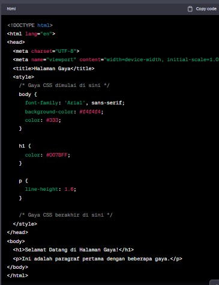

memberikan kehidupan pada dokumen HTML dan memungkinkan Anda untuk merancang tampilan halaman web dengan gaya yang menarik. Dalam artikel ini, kita akan membahas dasar-dasar CSS dan bagaimana Anda dapat menggunakan CSS untuk meningkatkan estetika situs web Anda.
CSS adalah bahasa gaya yang digunakan untuk mengontrol tata letak dan penampilan elemen-elemen HTML di halaman web. Dengan menggunakan CSS, Anda dapat mengubah warna, ukuran teks, jarak antar elemen, dan banyak lagi.
Untuk menggunakan CSS, Anda perlu menyematkannya ke dalam dokumen HTML Anda. Ini dapat dilakukan dengan menambahkan tag
Berikut adalah contoh penggunaan CSS internal dalam HTML
